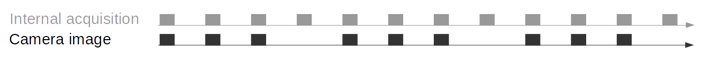

Stereo camera¶
The stereo camera component contains functionality for acquiring stereo image pairs and performing planar rectification needed to use the stereo camera as a measurement device.
Image acquisition¶
Acquiring stereo image pairs is the first step toward stereo vision. Since both cameras are equipped with global shutters and their chips are hardware-synchronized, all pixels of both camera images are always exposed at the exactly same time. GPIO out 1 signals the respective exposure time. Additionally, the time in the middle of the image exposure is attached to the images as a timestamp. This timestamp becomes important for dynamic applications in which the rc_visard or the scene moves.
Exposure time can be set manually to a fixed value. This is useful in an environment where lighting is controlled so that it is always at the same intensity. The camera is set to auto exposure by default. In this mode, the rc_visard chooses the exposure time automatically, up to a user defined maximum. The permitted maximum is meant to limit the motion blur that occurs when taking images while the rc_visard or the scene is moving. The maximum exposure time thus depends on the application. If the maximum exposure time is reached, the auto-exposure algorithm uses the gain to increase image brightness. However, larger gain factors also amplify image noise. Thus, the maximum exposure time trades motion blur off against image noise under weak-light conditions.
Planar rectification¶
Camera parameters such as focal length, lens distortion, and the relationship of the cameras to each other must be exactly known to use the stereo camera as a measuring instrument. The parameters are determined by calibration (see Camera calibration). The rc_visard is already calibrated at production time and normally requires no recalibration. The camera parameters describe with great precision all of the stereo-camera system’s geometric properties, but the resulting model is complex and difficult to use.
Rectification is the process of remapping the images according to an ideal stereo-camera model. Lens distortion is removed and the images are aligned so that an object point is always projected onto the same image row in both images. The cameras’ optical axes become exactly parallel. This means that points at infinite distance are projected onto the same image column in both images. The closer an object point is, the larger is the difference between its image columns in the right and left images. This difference is called disparity.
Mathematically, the object point \(P=(P_x, P_y, P_z)\) is projected onto image point \(p_l=(p_{lx}, p_{ly}, 1)\) in the left rectified image and onto \(p_r=(p_{rx}, p_{ry}, 1)\) in the right rectified image by
The focal length \(f\) is the distance between the common image plane and the optical centers of the left and right cameras. It is measured in pixels. The baseline \(t\) is the distance between the optical centers of the two cameras. The image width \(w\) and height \(h\) are measured in pixels, too. \(s_1\) and \(s_2\) are scale factors ensuring that the third coordinates of the image points \(p_l\) and \(p_r\) are equal to 1.
The rc_visard provides the time-stamped, rectified left and right images over the GenICam interface (see Chunk data). Live streams of the images are provided with reduced quality in the Web GUI.
Note
The rc_visard reports a focal length factor via its various interfaces. It relates to the image width for supporting different image resolutions. The focal length \(f\) in pixels can be easily obtained by multiplying the focal length factor by the image width in pixels.
Parameters¶
The stereo-camera software component is called rc_stereocamera and is represented by the
Camera tab in the Web GUI.
The user can change the camera parameters there, or directly via the REST-API
(REST-API interface) or GigE Vision
(GigE Vision 2.0/GenICam image interface).
Note
Camera parameters cannot be changed via the Web GUI or REST-API if rc_visard is used via GigE Vision.
Parameter overview¶
This component offers the following run-time parameters.
| Name | Type | Min | Max | Default | Description |
|---|---|---|---|---|---|
exp_auto |
bool | False | True | True | Switching between auto and manual exposure |
exp_height |
int32 | 0 | 959 | 0 | Height of auto exposure region. 0 for whole image. |
exp_max |
float64 | 6.6e-05 | 0.018 | 0.007 | Maximum exposure time in seconds if exp_auto is true |
exp_offset_x |
int32 | 0 | 1279 | 0 | First column of auto exposure region |
exp_offset_y |
int32 | 0 | 959 | 0 | First row of auto exposure region |
exp_value |
float64 | 6.6e-05 | 0.018 | 0.005 | Manual exposure time in seconds if exp_auto is false |
exp_width |
int32 | 0 | 1279 | 0 | Width of auto exposure region. 0 for whole image. |
fps |
float64 | 1.0 | 25.0 | 25.0 | Frames per second in Hertz |
gain_value |
float64 | 0.0 | 18.0 | 0.0 | Manual gain value in decibel if exp_auto is false |
wb_auto |
bool | False | True | True | Switching white balance on and off (only for color camera) |
wb_ratio_blue |
float64 | 0.125 | 8.0 | 2.4 | Blue to green balance ratio if wb_auto is false (only for color camera) |
wb_ratio_red |
float64 | 0.125 | 8.0 | 1.2 | Red to green balance ratio if wb_auto is false (only for color camera) |
This component reports the following status values.
| Name | Description |
|---|---|
baseline |
Stereo baseline \(t\) in meters |
color |
0 for monochrome cameras, 1 for color cameras |
exp |
Actual exposure time in seconds. This value is shown below the image preview in the Web GUI as Exposure (ms). |
focal |
Focal length factor normalized to an image width of 1 |
fps |
Actual frame rate of the camera images in Hertz. This value is shown in the Web GUI below the image preview as FPS (Hz). |
gain |
Actual gain factor in decibel. This value is shown in the Web GUI below the image preview as Gain (dB). |
height |
Height of the camera image in pixels |
temp_left |
Temperature of the left camera sensor in degrees Celsius |
temp_right |
Temperature of the right camera sensor in degrees Celsius |
time |
Processing time for image grabbing in seconds |
width |
Width of the camera image in pixels |
Description of run-time parameters¶
{kind=link}
Fig. 19 The Web GUI’s Camera tab
fps(FPS)This value is the cameras’ frame rate (fps, frames per second), which determines the upper frequency at which depth images can be computed. This is also the frequency at which the rc_visard delivers images via GigE Vision. Reducing this frequency also reduces the network bandwidth required to transmit the images.
The camera always runs with 25 Hz to ensure proper working of internal modules such as visual odometry that need a constant frame rate. The user frame rate setting is implemented by excluding frames for stereo matching and transmission via GigE Vision to reduce bandwidth as shown in figure Fig. 20.
Fig. 20 Images are internally always captured with 25 Hz. The
fpsparameter determines how many of them are sent as camera images via GigE Vision.exp_auto(Exposure Auto or Manual)- This value can be set to 1 for auto-exposure mode,
or to 0 for manual exposure mode. In manual exposure mode, the
chosen exposure time is kept, even if the images are overexposed or
underexposed. In auto-exposure mode, the exposure time and gain factor
is chosen automatically to correctly expose the image. The last
automatically determined exposure and gain values are set into
exp_valueandgain_valuewhen switching auto-exposure off. exp_max(Max Exposure)- This value is the maximal exposure time in auto-exposure mode in seconds. In the Web GUI, this exposure time can be conveniently entered in milliseconds. The actual exposure time is adjusted automatically so that the images are exposed correctly. If the maximum exposure time is reached, but the images are still underexposed, the rc_visard stepwise increases the gain to increase the images’ brightness. Limiting the exposure time is useful for avoiding or reducing motion blur during fast movements. However, higher gain introduces noise into the image. The best trade-off depends on the application.
exp_offset_x,exp_offset_y,exp_width,exp_height(Exposure Region)These values define a rectangular region in the left rectified image for limiting the area used for computing the auto exposure. The exposure time and gain factor of both images are chosen to optimally expose the defined region. This can lead to over- or underexposure of image parts outside the defined region. If either the width or height is 0, then the whole left and right images are considered by the auto exposure function. This is the default.
The region is visualized in the Web GUI by a rectangle in the left rectified image. It can be defined using the sliders or by selecting it in the image after pressing the button
Select Region in Image.exp_value(Exposure)- This value is the exposure time in manual exposure mode in seconds. This exposure time is kept constant even if the images are underexposed. In the Web GUI, this exposure time can be entered in milliseconds for convenience.
gain_value(Gain)- This value is the gain factor in decibel that can be set in manual exposure mode. Higher gain factors reduce the required exposure time but introduce noise.
wb_auto(White Balance Auto or Manual)- This value can be set to 1 for automatic white balancing or 0 for manually
setting the ratio between the colors using
wb_ratio_redandwb_ratio_blue. The last automatically determined ratios are set intowb_ratio_redandwb_ratio_bluewhen switching automatic white balancing off. White balancing is without function for monochrome cameras. wb_ratio_redandwb_ratio_blue(Red | Green and Blue | Green)- These values are used to set red to green and blue to green ratios for manual white balance. White balancing is without function for monochrome cameras.
{kind=link}
These parameters are also available over the GenICam interface with slightly different names and partly with different units or data types (see GigE Vision 2.0/GenICam image interface).
Services¶
The stereo camera component offers the following services for persisting and restoring parameter settings.
save_parameters(Save)With this service call, the stereo camera component’s current parameter settings will be made persistent to the rc_visard. That is, these values are applied even after reboot.
This service requires no arguments.
This service returns no response.
reset_defaults(Reset)Restores and applies the default values for this component’s parameters (“factory reset”).
Warning
The user must be aware that by calling this service, the current parameter settings for the camera component are irrecoverably lost.
This service requires no arguments.
This service returns no response.